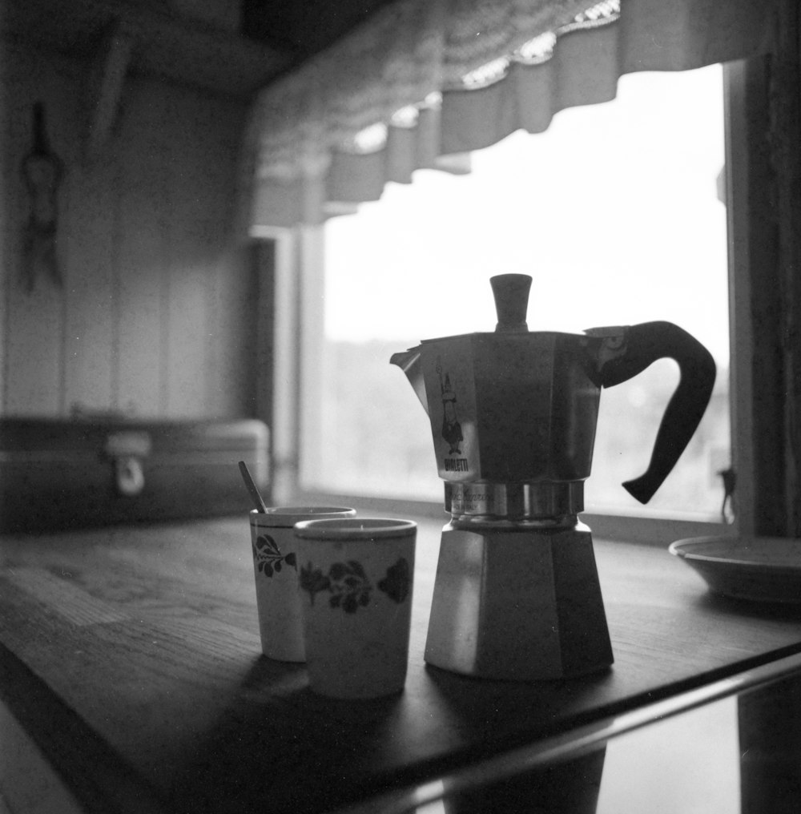

Too many research tabs open? How to keep track of sources
Short answer
Sort your research tabs by the question they answer, not by when you opened them: one tab group or one bookmark folder per chapter or question. Keep only the question you're working on open, and put the rest somewhere you can search and reopen whole. Papers you'll cite belong in a reference manager; tabs are for the reading you haven't finished.

Why research tabs get out of hand
Research opens tabs faster than anything else. One paper cites three more, a search turns up ten results worth a look, and each source could matter later. Closing any of them feels like losing a lead, so a thesis or a literature review ends up as eighty tabs across four windows, in the order you happened to find them.
The order is the problem. A source is useful because of the question it answers, and a tab strip doesn't know your questions.
Group sources by question
- Name your questions. A chapter, a section of the review, or a question you're trying to answer. Four or five names are enough to start.
- Make a tab group for each. Hold Ctrl (⌘ on a Mac) and click the tabs that belong together, then right-click one of them and add them to a new group from the menu. Give the group the question's name and a colour.
- Collapse what you aren't reading. Click a group's name to fold it down to one label. The tabs stay open, out of the way.
- Find a source by name. Press Ctrl+Shift+A (⌘+Shift+A on a Mac) and type a word from its title. Chrome switches to it, even in another window. More ways in how to find a tab you lost.
Keep a copy that outlasts the session
Open tabs are the least safe place to keep a source: a crash, a restart or a stray click can take them. Save each question as you finish a sitting.
- A bookmark folder per question. Move one group's tabs into their own window, then press Ctrl+Shift+D (⌘+Shift+D on a Mac). Chrome puts every tab in the window into one new folder; name it after the question.
- The reading list for single articles. Right-click a tab and choose Add tab to reading list. It suits one-off reads, not a set of sources that belong together.
- A reference manager for what you'll cite. Once you know a paper matters, store it where your citations live, with its details and your notes. Tabs are a poor place for a bibliography.
If you've ended up with a long list of links in a document or an export, the free Links to bookmarks tool turns it into a bookmarks file Chrome can import, with a folder per site. It runs in the page and sends nothing anywhere.
Work on one question at a time
Each open group is a question competing for your attention. Keep the one you're writing about open, plus anything you're reading for it, and close the rest. Closing is safe once each question is saved as a set you can reopen whole.
Where Simmer fits
Simmer does the sorting for you. It reads your open tabs and names the things you're in the middle of, from what opened what, your tab groups and the tab titles, on your computer. A paper you opened from another paper lands with it. Put a question on the back burner and every tab of it is saved first, in Chrome's storage on your computer and in your bookmarks if you choose, then they close. Bring back reopens the whole set, in its group, when you return to that chapter.
To find one source later, type sm and a space in the address bar, then a word from its title: Simmer searches your open tabs, the tabs it saved and your bookmarks together.
To be plain about it: Simmer keeps tabs, not files. It doesn't store PDFs, notes or citations, it doesn't sync to other computers, and it works in Chrome on a computer only. Nothing happens before you press Start, and everything Simmer does is listed under Recently with Undo.
Questions
- How do I keep track of sources for a literature review in Chrome?
- Make one tab group or bookmark folder per question or section, not one long list. Save each set with Ctrl+Shift+D (⌘+Shift+D on a Mac) when you finish a sitting, and move papers you will cite into a reference manager.
- How do I save research tabs without keeping them open?
- Bookmark all the tabs in a window at once with Ctrl+Shift+D (⌘+Shift+D on a Mac) and name the folder after the question. Simmer can also put a whole set on the back burner and bring it back in one click.
- How many tabs should I keep open while writing?
- The tabs for the section you're writing and the sources you're reading for it. Collapse or save the other questions so you can reopen them whole when you get there.
- Can Simmer save the PDFs I have open?
- It saves the tab, meaning the address, so Bring back reopens it. It doesn't download or store the file. Keep PDFs you'll cite in your reference manager or on disk.